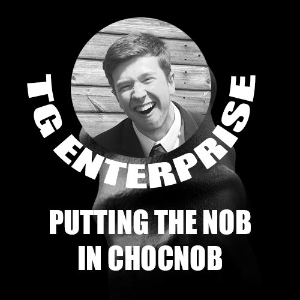
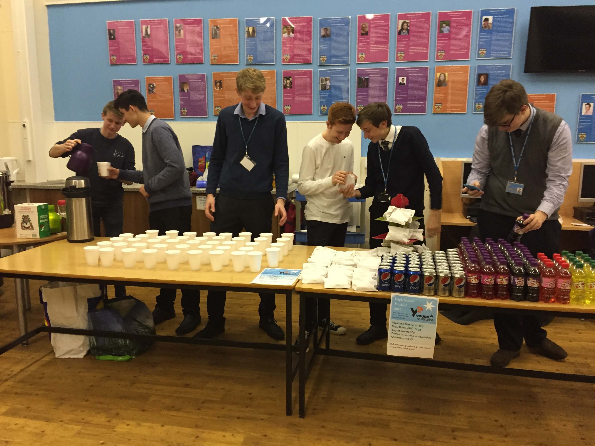

This product may contain traces of "fake news"! Not all of the information presented on this page is neccesarily fact, even if it is presented as such. TG Enterprise takes no responsibility for the actions of anyone who reads this blog.

Official announcement: TG Enterprise, a branch of Young Enterprise, has been put down, at long last, like the sick dog that it was. This should not be a suprise to any who followed the company closely, as the warning signs have been present for quite some time.
TG Enterprise has been called, by some critics, the worst Young Enterprise group "in Bournside's history". Responding the criticism, Managing Director Marley Sudbury said in a statement "Whatever, I got fifteen quid". He faced backlash from those claiming that shares were manipulated when the company was liquidated.
Company founder Thomas George declined to comment, although his Twitter bio still mysteriously claims he is the Managing Director, a position he lost after a vote in December. Many have speculated that Mr. George will publish his memoirs later this year, documenting his experience of the Young Enterprise competition.
Nobody knows what the company is going to do with their social media accounts or website, but I would wager that they won't put any effort into it. Amateur mobile footage emerged which proported to show Mr. Sudbury performing a memorial service for his company.
R.I.P. TG Enterprise, 05/10/2016 - 01/03/2017:
You will be missed. Probably.
The Managing Director of TG Enterprise has been quoted as saying that his business was "on the brink." Mr. Sudbury tweeted on Saturday that "It's clear that some bad decisions have been made, @TGEnterpriseUK is on the brink."
Investors in the business were reportedly assured that the company was in fact in safe hands, but the public response was significant, with protests held in 25 major countries accross the world. Protestors said that they were marching in the hopes that they could convince the Managing Director to raise wages.
However, the protestors themselves faced backlash from Mr. Sudbury's supporters, who claim that those who seek greater wages are traitors to The Motherland. One supporter on Twitter said "I don't think that the Supreme Leader should give in to the demands of these filthy traitors!"
Meanwhile, it seems that life at TG Enterprise is continuing as normal, as employees were this week issued with new uniforms. The Director of Design declined that the style was influenced in any way by the USSR Uniforms of the late 60s.
TG Enterprise lives another day, but many experts are questioning whether the business stands a chance given the inexperience of the current leadership. The price of shares in the company has plummeted in the wake of Brexit, but they say they have plans which would keep them a "strong economic force", even after the UKs planned departure from the European Union.
Many have speculated that small businesses like TG Enterprise could be forced to close their doors as a result of last years referendum, with many larger businesses moving abroad. Despite this, TG Enterprise officials say they have seen recoord sales figures over the last few months. One director was quoted as saying "Brexit means Brexit, whatever that means." This was interpreted as a positive sign.
As the AS Level exams approach, many have questioned if the board of directors can be expected to continue managing such a vast business empire and pass all of their subjects. According to the members we spoke to, the answer is a resounding "No." There was a minor scandle this week when it was revealed former MD Thomas George was committing fraud, as he claimed to still hold the roll on his Twitter page. Mr. George has still not fixed this, and declined to comment.
Also, is it "TG Enterprise" or "TGEnterprise"? The answer is it's both, but officially it's "TGEnterprise", because that's what it says on the cheque book.
Yesterday, documents containing sensitive information about TG Enterprise was released by WikiLeaks. They claim that these documents show the hold that corruption has on the heart of this business. One allegation was that members of the business had been exiled to North Korean concentration camps, after disagreements with previous Managing Director Thomas George.
Although the current Managing Director is believed to make use of more standard business procedure, there was also a more recent claim that the production of so-called 'hand-made cards' for Valentines day had been outsourced to unpaid orphans in Cardiff. Assistant MD Jan Ilnicki strongly denied the alleged use of these third-world children.
Today a leadership election was held. The candidates for the role of Managing Director were Secretary Sudbury and Marketing Director Ilnicki. After two empassioned and well-thought-out speaches, the votes were counted, and the results were revealed: Secretary Sudbury won with 86.8% of the vote share, whilst Marketing Director Ilnicki got 14.2%.
As a result of this election, the new Managing Director is Marley Sudbury, and the new Assistant Managing Director is Jan Ilnicki. Tommy G. declined to comment. Whilst it is not known the roles the previous Managing Directors will be filling, it is speculated that there are many positions within the business which require occupation. This election signifies the landmark return of democracy to the previously autocratic company.

From Wednesday the 30th of November to Saturday the 3rd of December, various members of TG Enterprise worked at the Bournside Christmas production of "High School Musical", selling teas, coffes, sweets and sodie-pops to the audience members.
This event, and the cash flow from it, has helped to kickstart the business, primarily by providing the money used to pay start-up fees. All money that didn't go to paying of these fees went directly to the pockets of Mr. Tommy G., even though he did little to no work. This caused even more resignations, especially amongst members whos origins lay amongst the lower classes.
On the 22nd of November 2016, our business suffered losses from which we may never recover. Secretary James W., as well as several other members, resigned over the controversial transition of TG Enterprise from democracy to dictatorship. As Tommy G. himself became the autocratic führer, many felt that they could not maintain their roles in good faith. The resulting reshuffle may have long-reaching impacts for the future of the company.
In the 'last vote' of the company, former IT Director Marley S. was voted into the position of Secretary, though many complained that this could not be considered a truly democratic vote, as only three member were allowed to vote, all of which were completely bias. Many also argued that the resignation of these members under such circumstances could be considered to be furthering the decrease of the reign of democracy.